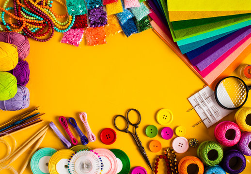

Collective terms for handicrafts include artisanry, crafting, and handcrafting. The term arts and crafts is also applied, especially in the United States and mostly to hobbyists' and children's output rather than items crafted for daily use, but this distinction is not formal, and the term is easily confused with the Arts and Crafts design movement, which is in fact as practical as it is aesthetic.
Leave a comment